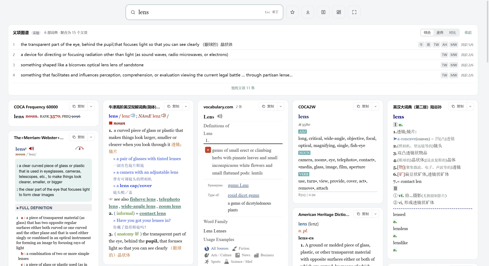
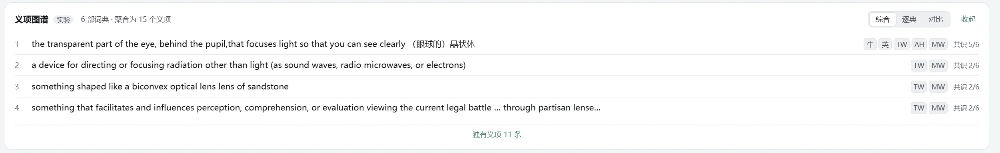
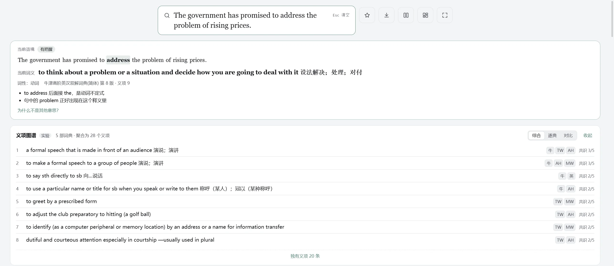
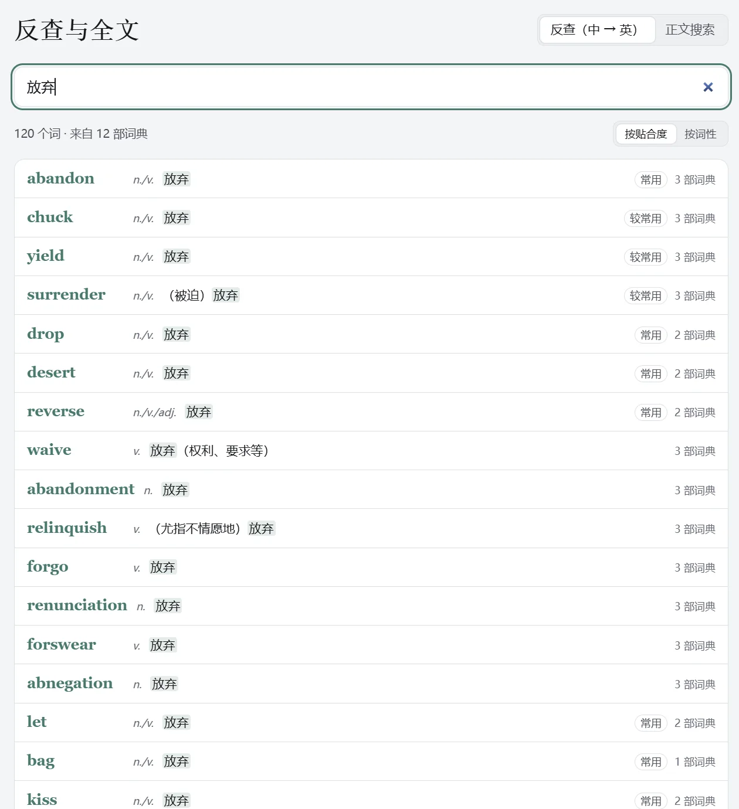

查词
一次查遍你所有的词典，
还告诉你句子里是哪个意思
Lens 读你自己的 MDict、StarDict 词典，十几部同时查也即时出结果。在这之上，它帮你对齐义项、判断词义、找相关词、从中文反查英文。
多词典同查，卡片墙一屏看完
每部命中的词典是一张卡片，词典自己的排版、配色、字体、发音、脚本原样保留。按 Ctrl+Shift+W 切到卡片墙，卡片按内容长短铺满整个窗口。

- 支持的格式：MDict（.mdx + .mdd，含轻度加密和 @@@LINK 跳转）、StarDict（.ifo、.dict.dz、.syn）、Lens JSON 自制词典。
- 快：导入时建一次索引，之后只做内存映射，不把整部词典读进内存；单部词典精确查询毫秒级，多部并行，先到先显示。
- 原样显示：词典 CSS 自动适配，自带字体、图片、发音从 .mdd 读取；带脚本的词典在沙盒里运行，折叠、切换这些交互照常用。
- 拖动排序：拖卡片标题换位置，顺序同步到词典库；也可以在词典库里拖，查词结果和导出都按这个顺序。
- 暗色主题自动提亮：词典把字写成深灰时，暗色主题下会自动修正对比度。
- 词典挪了位置不用重建：文件挪走或换盘符会提示，重新指定位置即可，Lens 会核对是不是同一部词典。
义项图谱：几部词典的意思对齐了看
- 把几部词典的义项按释义相似度归成组，标出几部词典都收了（共识）、哪些只有一部有。
- 每条义项后面是收录它的词典缩写，点一下跳到那部词典。
- 「综合 / 逐典 / 对比」三种看法；词性有分歧时会标出来。
- 查 lens：6 部词典聚合成 15 个义项，「眼球的晶状体」是 5 部词典的共识。

当前语境：这个词在这句话里是什么意思
有原句时（划词、在 Lens 里点词，或者把整句粘进搜索框再点词），结果上方会出现一张卡片：句中最可能的意思、词性、判断依据和把握程度。展开「为什么不是其他意思？」能看到其他义项的得分。

- 完全离线：不调用 AI，不花钱，也不把句子发出去。
- 判断词性：按句子结构（to 后面是动词、冠词后面是名词、-ly 是副词……），只有一种词性的词直接用词典或 COCA 的。
- 给义项打分：句子里的词出现在释义里、COCA 搭配词、近义词都会加分；多部词典都收录的义项略加分。
- 说清依据：比如「to address 后面接 the，是动词不定式」「句中的 problem 正好出现在这个释义里」。
词汇网络：一个词带出一串词
当前词的相关词分四组，可以显示成放射图或表格（表格带词性和中文释义）。点任何一个词就查它。
| 组 | 怎么找的 | 例：rusty |
|---|---|---|
| 派生词 | 内置 WordNet 的派生关系，加上同词干、后缀合理、并在词典正文里核对过的词 | rust, rustily, rustiness, rustproof |
| 同根词 | 去掉前缀得到词根，换别的前缀去找 | convulse → revulsion, avulsion |
| 易混词 | 70 多对常见易混词表，加上 COCA 里开头相同、拼写只差一点的词 | affect / effect, adapt / adopt |
| 近义词 | COCA 近义词组；没有 COCA 时用 WordNet 同义词集 | corroded, oxidized, tarnished |
搜索框：比你想的更懂你要查什么
- 词形还原：查 went 找到 go，查 convulsed 找到 convulse；词典不收 boutiques 时显示 boutique。
- 也可能是变形：left、found 本身是词条，下面会提示「也可能是 leave 的变形」，点一下查它。
- 拼写纠错：所有词典都没查到时，给出「你是不是要找」。
- 粘贴整句：认出是一句话就不查整句，直接在句子上点词，用这句话判断词义；Shift+点选词组。
- 中文句子也能点：粘贴一句中文自动分词，点哪个查哪个；「铬钼钢」这种术语查完还能点单个字。
- 键盘就够：Ctrl+K 聚焦，↑↓ 选候选，Esc 清空，Alt+← 后退，Tab 切词典。
中文反查：想说的那个英文词，找出来
- 给英汉双解词典建全文索引后，输入中文，列出释义里有这段中文的英文词。
- 按贴合度、收录词典数、是不是主要义项、常用度排序；可以按词性分组。
- 「放弃」→ abandon、yield、surrender、waive、relinquish、forgo……「固执」→ stubborn、obstinate、headstrong……
- 正文搜索：在所有词条的释义和例句里搜一段话，比如 take for granted 出现在哪些词条里、「随处可见」在例句里怎么译。
- 建好索引后每次搜索 10–60 毫秒。Ctrl+Shift+F 打开。

右侧栏：词频、搭配、真实例句
右侧栏（Ctrl+Shift+\）的内容和顺序可以自己定，还能把任意一部词典放进去。
- COCA 词频与搭配：导入 COCA 2 万词表后，显示排名、频次、语体分布（口语 / 小说 / 新闻 / 学术），按词性分组的搭配词和近义词，点搭配词直接查。
- 内置 WordNet 3.1：约 15 万词。没有 COCA 也能提供词性、派生关系、近义词和不规则变形。
- 真实例句：来自出版物的例句，按小说、新闻、科技等来源筛选。
- AI 双语例句（可选）：用 Claude 或 DeepSeek 按这个词的真实搭配生成中英例句；只发送单词、简释和搭配词，生成过的直接用缓存。
场景配置组
给不同场景准备不同的词典组合：读小说用牛津、朗文、韦氏；翻译用双解加汉英；编程用技术词典。左侧导航或 Ctrl+1～9 一键切换，切换后用同一个词重新查。每个场景勾哪些词典是一张勾选表，一目了然。
在线词典
- API 模式：Free Dictionary（免 Key）、Merriam-Webster、Oxford，结果可以参与复制和导出。
- 网页模式：填一个网址模板，在独立的只读窗口里打开原网页。
- 查询时机：每次都查 / 本地没结果时才查 / 手动，可以按词典单独设置。
- 离线缓存：默认 30 天，断网时显示缓存并标明获取时间。
复制、导出、批量导出
- 复制为 Markdown：义项变有序列表、例句变斜体，直接粘到 Obsidian 等笔记软件。
- 复制为 HTML：可以内联词典样式，粘到 Word 保留颜色和粗斜体。Ctrl+Shift+A 合并复制所有词典。
- 单词导出 PDF / HTML（Ctrl+E）：选词典和顺序，卡片式或文档式，纸本、跟随主题、黑白省墨，可带上你的语境句。
- 批量导出：从历史、生词本或粘贴的词表，一次导出上千个词；每词一个文件或合并成一本（带目录书签）。
- 不怕中断：随时暂停继续，程序关了下次启动接着做；单个词出错不中断，最后给失败清单可重试。
- 可预估：导出前估算用时和文件大小，检查磁盘空间；导出期间阻止系统睡眠。